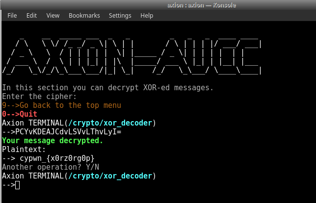
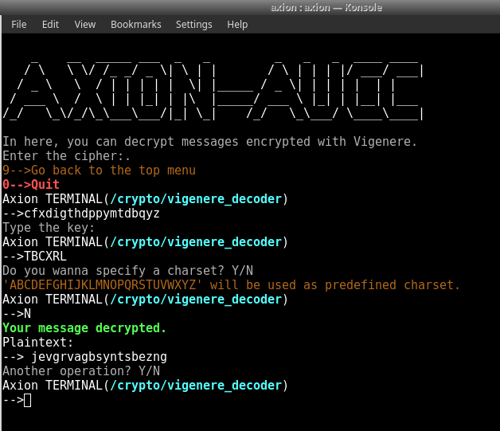
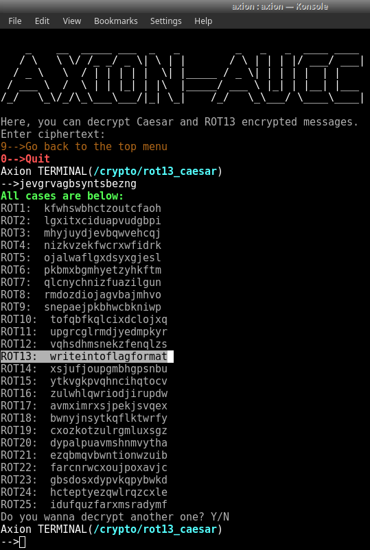
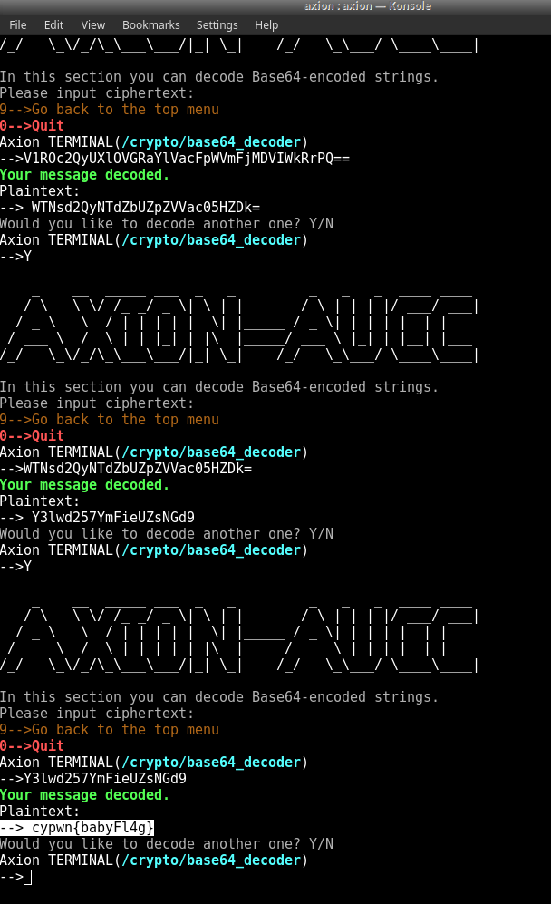
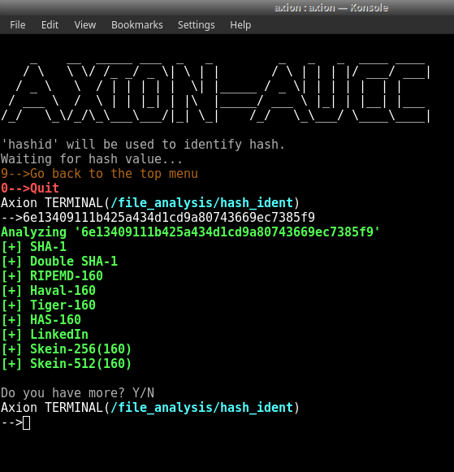
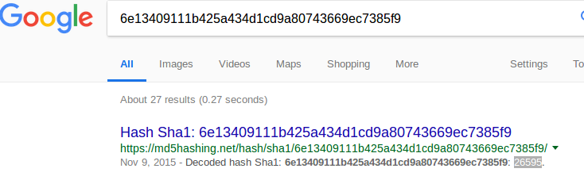
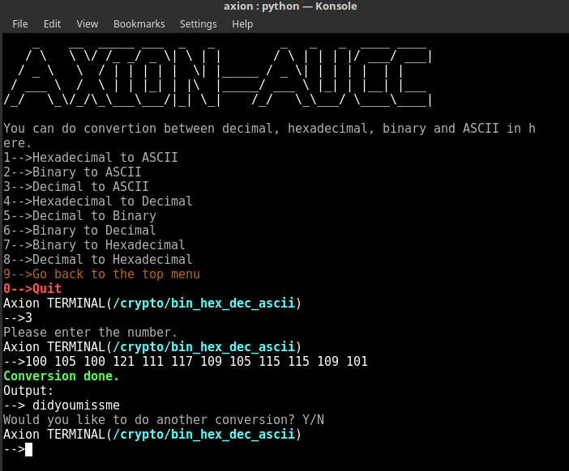

En basit tanımıyla var olan bir verinin, okunabilirliğini kısıtlamak amacıyla kullanılan algoritmalar bütünüdür. Verinin okunabilirliğini kısıtlayarak veri güvenliğini sağlar.
Genelde veriyi bozmadan verinin formu değiştirilir. Böylece hem veri güvenliği sağlanır hem de veri kaybı yaşanmaz.
CTF'lerde kendine ait geniş bir kategoriye sahiptir ve Crypto soruları olarak geçer. Bu sorularda amacımız genelde formu değiştirilmiş verileri okunabilir formlarına geri çevirerek FLAG'i elde etmektir. 4 küçük alt kategoriye ayrılır.
Encoding'in amacı verinin formunu kayıpsız bir şekilde başka bir forma çevirmektir. Kendini Encrypt'den farkı bu işlemi yaparken key (anahtar) kullanmamasıdır. Encode eyleminin tersi Decode'dur ve Decode işlemi için gereken tek şey Encode için kullanılan algoritmanın bilinmesidir herhangi özel bir anahtar ya da şifreye ihtiyaç yoktur.
En çok karşılaşılan türleri:
Encoding ile aynı amaca sahiptir ancak Encrypt işleminde özel bir key (anahtar) kullanılır. Bu sayede Decrypt işlemi için algoritma ile beraber bu özel anahtarın bilinmesi gereklidir. Özel anahtar olmadan şifreyi çözmenin tek yöntemi Brute Force (Kaba Kuvvet) saldırısı yapmaktır basitçe mümkün olduğunca her kelimeyi anahtar olarak denemektir :D
Alt türleri olarak açık anahtarlı şifreleme ve gizli anahtarlı şifreleme adında iki türü bulunur.
Gizli anahtarlı şifrelemede sadece tek bir anahtar vardır. Veri iletimi yapılırken veri bu anahtar ile şifrelenir ve veriyi alan kişi yine bu anahtar ile şifreyi çözer. Temel sorun ise iletimin başında veriyi şifreleyen kişinin kullandığı anahtarı kimseye göstermeden nasıl karşı tarafa göndereceğidir.
Açık anahtarlı şifrelemede iki anahtar vardır ve biri herkese dağıtılır (public) öbürü ise sadece kişiye özeldir (private). Ayrıca public anahtar, private anahtardan türetilir sonra kişi public anahtarını herkesin görebileceği bir biçimde yayımlar. Bir kişi başka bir kişiye güvenli veri iletmek istediğinde iletmek istediği veriyi göndereceği kişinin public anahtarı ile şifreler. Sonra veriyi iletir. Public anahtar ile şifrelenmiş veri sadece private anahtar ile çözülebilir. Public anahtardan private anahtar elde edilemez. Gizli anahtarlı şifrelemeye göre çok daha yavaştır ancak gizli anahtarlı şifrelemede bir sorun olan anahtar iletimi sorununa bir çözüm getirmektedir.
Bu iki yöntem genelde Hibrit kullanılır.
Gizli anahtarlı şifreleme türleri:
Açık anahtarlı şifreleme türleri:
Hashing (Özetleme) algoritmalarının amacı veriyi geri döndürülemez bir biçimde şifrelemektir. Hashing algoritmaları tek yönlü çalışır ve anahtara ihtiyaç duymaz. Önemli bir nokta ise çıktının yani elde edilen şifrelerin uzunluğunun girdi yani şifrelenmemiş verinin uzunluğundan bağımsız olarak hep aynı olmasıdır. Örneğin MD5 algoritması hep 32 karakter uzunluğunda şifreler oluşturur.
Bir çok farklı alanda kullanılır. Bu alanlardan biri işletim sistemleridir. Örneğin Linux'ta kullanıcı kimlik doğrulama işlemi için hashing kullanılır yani kullanıcı parolaları hashlenmiş halde tutulur.
Kırmak için Brute Force (Kaba Kuvvet) saldırısı kullanılır. Amaç kelime listesinde ki tüm kelimeleri tek tek aynı hash algoritmasından geçirmek ve elde edilen şifrelerin kırılmak istenen şifreye eşit olup olmadığına bakmaktır.
En çok karşılaşılan türleri:
Obfuscation (Karıştırma) adından da anlaşılacağı veri güvenliğini sağlamak için karıştırma yapar. Temel olarak Encoding'e benzer ancak daha basit halidir. Örnek olarak programların kaynak kodlarının herkesin anlayamaması ve hırsızlıkların önüne geçilebilmesi için Obfuscation işlemine tabii tutulması örnek olarak gösterilebilir.
En çok karşılaşılan türleri:
Cryptography soruları çeşit bakımından çok fazla ama burada bir iki örnek yardımıyla anlatmaya çalışacağız.
Soru: PCYvKDEAJCdvLSVvLThvLyI=
Stringin sonunda = işareti olmasından ötürü her nekadar Base64 gibi görünsede aslında Base64 ile Encode edilmemiş. XOR ile Encode edilmiş bir şifre olduğunu deneme yanılmalar ile buluyoruz:

FLAH = cypwn_{x0rz0rg0p}
Soru: Text: cfxdigthdppymtdbqyz
Key: TBCXRL
Şifrelenmiş metin key ile birlikte verildiğiden Encrypt edildiği anlaşılıyor. Vigenere olduğunu varsayarak devam ediyoruz:

Jevgrvagbsyntsbezng sonucuna ulaşıyoruz. Bu çıktının üzerinde ise Rot13 rotasyonu yaptığımızda ise flag'i buluyoruz:

FLAG = cypwn_{Writeintoflagformat}
Soru: Vm0wd2VHUXhTWGhXV0doV1YwZDRWbFl3WkRSV01WbDNXa1J TVjAxV2JETlhhMUpUVm14S2MyTkliRmhoTVhCUVZqSjRZV1JIVmtsalJt UnBWa1ZhU1ZkV1pEUlRNbEpYVW01T2FGSnRVbkJXYTFaaFUxWmtW MXBJY0d4U2EzQllWakkxUzJGV1NuUmhSemxWVm14YU0xUnNXbUZX YkdSeVYyeENWMkV3Y0ZSV1ZWcFNaREZDVWxCVU1EMD0
Sadece şifre verildiği için Encode edilmiş olabileceğini düşünerek Base64 ile Decode etmeye başlıyoruz. ard arda 9 defa Decode ettikten sonra flag'e ulaşıyoruz :

FLAG = cypwn{babyFl4g}
Soru: Hold Your Breath and Count to 27395
6e13409111b425a434d1cd9a80743669ec7385f9
Yine elimizde bir key yok ancak bu sefer Decode yöntemleri çalışmıyor ve doğal olarak Hashing'e yöneliyoruz. Önce hangi algoritma ile hashlendiğini bulmak için axion'u kullanıyoruz:

SHA-1 olduğunu gördükten sonra Brute-Force denemeden önce daha önce kırılmış olabileceğini düşünerek internette arama yapıyoruz:

FLAG = 26595
Soru: Keep Calm and Discard Powers of 2
100256105256100256121256111256117256109256105256115256115256109256101
Verilen soruda ASCII değerleri seçilebilmekte. Ortalığı karıştıran mevzu ise “256” değerleri. ASCII tablosu 0- 255 arasındaki sayılardan oluştuğundan ötürü doğrudan dönüşüm yapmamızı engellemek adına aralara 256’lar serpiştirildğini düşünerek 256’ları temizliyoruz. Ve altta ki sonucu elde ediyoruz:
100 105 100 121 111 117 109 105 115 115 109 101
Son olarak bu sayıları ASCII tablosuna göre harflere çevirdiğimizde:

FLAG = didyoumissme
Üsteki soruların çözümlerinde buradan yararlanılmıştır.